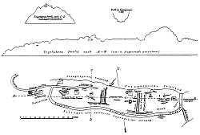

| In Deutsch |
| In Deutsch |
Höhlenwohnungen in Langenstein
Cave Houses at Langenstein
Useful Information
 |
| Image: an old postcard of a cave house. |
| Location: | Langenstein, at the southern rim of the Harz. |
| Open: |
no restrictions. [2008] |
| Fee: |
free. [2008] |
| Classification: |
 Cave House Cave House
|
| Light: | bring torch |
| Dimension: | |
| Guided tours: | |
| Photography: | |
| Accessibility: | |
| Bibliography: | |
| Address: | |
| As far as we know this information was accurate when it was published (see years in brackets), but may have changed since then. Please check rates and details directly with the companies in question if you need more recent info. |
|
History
 >
>| 1151 | castle Langenstein first mentioned. | |
| 1916 | last inhabitant, Gottlieb Zander, leaves his house. |
Description
|  |
| Image: the Lange Stein with the Altenburg and the cave houses. A sketch by the Amtsrat Dr. W. Rimpau. |
The cave houses at Langenstein have a long tradition, they were used for centuries, until the first half of the 20th century. During the time of the GDR they were closed, but after the reunification of East- and West-Germany, the commune restored several cave houses and opened them to the public. During the last decade of the 20th century, the cave house number 11 at the Altenburg was renovated, and in 2008 the renovation of three more cave houses at the Schäferberg started. Both locations are now open to the public.
It is not known, when the first caves were built into the soft sandstone. Some tell the oldest originate from pre Roman times. Most likely the first caves were built when the Altenburg, the castle on top of the hill was constructed during the 12th century. Bishop Ulrich, Vice-Dominus and provost of the Liebfrauenstift at Halberstadt was commissioned to errect a castle on the Langer Stein (long rock). This castle was completed in 1151 and was used as a refuge and summer residence of the bishops of Halberstadt. The impressive hollow way from the village uphill to the castel is the best preserved remain of this castle. Only a few remains of the foundation may be seen. The wheels of the carriages which supplied the castle left deep lane grooves. Some of the caves along this way, cut directly into the rock, may have been used by guards and as horse stable.
 |
| Image: the renovated house No 11. |
The original age of the cave is today impossible to determine. The are no remains showing medieval age because all caves were massively altered during the 18th and 19th century. At this time they were refurbished as cave houses. The houses had a kitchen, a living room and a bedroom. Often the bedroom was very low, only the living room was high enough to stand upright. The living room also had an oven, which allowed to heat it during winter.
The climate in central Europe causes a temperature of some 8°C underground. This is definitely too low for living. Additionally the porous sandstone allows water from above to seep through, so the wals are rather humid. As a result cave houses should be heated all year round, both to reach a comfortable temperature and to dry them. Unfortunately the inhabitants were members of the lowest social class and were not able to do this. The cave houses had only a small window, but the door was kept open on all dry days to allow dry and warm air to enter the cave.
On the other side of the village, on the Schäferberg, more cave houses can be found. They are a little younger and were constructed during the mid 19th century. They were all abandonded in the early 20th century. During the 20th century they were either used as cellars or abandoned.
 |
| Höhlenwohnungen in Langenstein Gallery |
 Search Google for "Langenstein"
Search Google for "Langenstein" Google Earth Placemark: Altenstein
Google Earth Placemark: Altenstein )
)